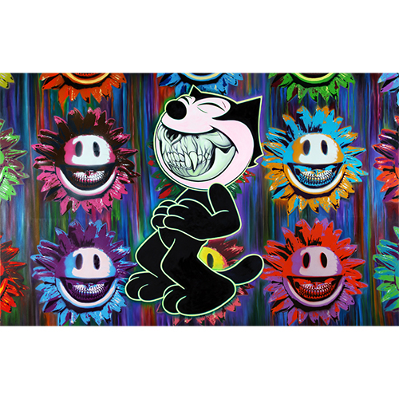

Exhibitions
Grand Opening — Inaugural Exhibition, URBAN NATION Museum for Urban Contemporary Art, Berlin, Germany, opened September 16, 2017.
Notes
Dimensions are approximate and are based on visual comparison and available documentation.
This work appears in Montana Cans’ coverage of the URBAN NATION Museum for Urban Contemporary Art grand opening and inaugural exhibition.
This work references Felix the Cat, the cartoon character created by Otto Messmer and Pat Sullivan.
Ancillary Documentation

Selected Online Circulation
Selected sources documenting the work’s wider online circulation and exhibition context.